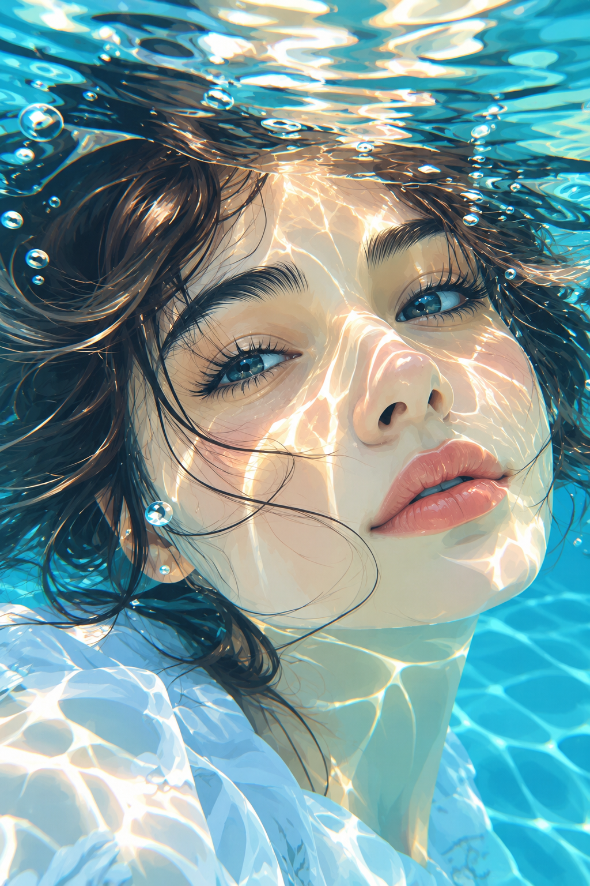
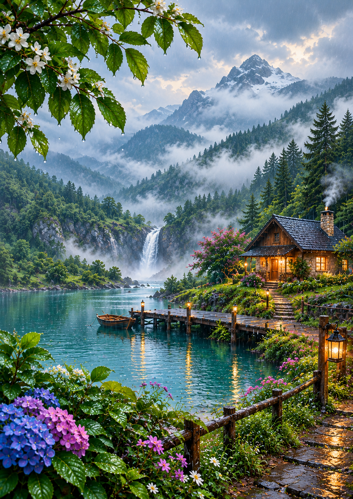
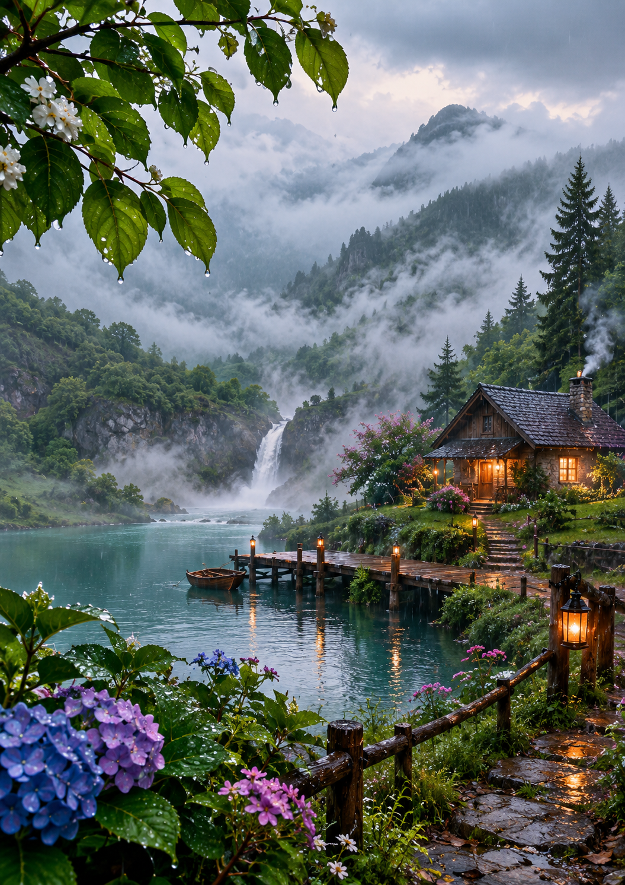

Dreamy Underwater Portrait
An artistic underwater portrait with turquoise water, bubbles, flowing hair and cinematic sunlight.
Creative visual concepts, AI-generated artwork and digital design experiments created with a focus on dreamy atmospheres, storytelling and eye-catching composition.

An artistic underwater portrait with turquoise water, bubbles, flowing hair and cinematic sunlight.

A cinematic fantasy landscape combining mist, water, mountains and a peaceful atmosphere.

Atmospheric visual artwork designed around dramatic light, natural scenery and visual storytelling.
MJ AI Art is a personal portfolio for AI-assisted visual creation, illustration concepts and digital design. New projects will be added over time.